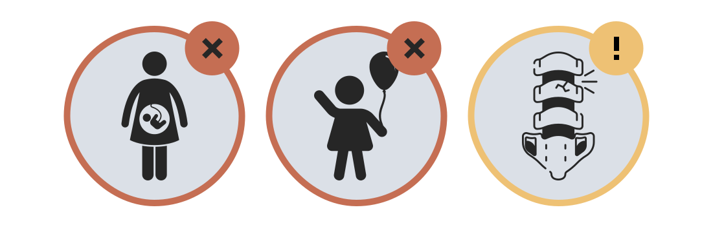

Você perceberá que é fácil compreender o passo a passo do curso, utilizando os botões indicados na parte superior esquerda da tela.
Nesta aula, você estudará o que é o NEWS 2, como usá-lo e o que significa formular uma resposta clínica. Observe, que quando um paciente chega ao hospital e está em estado grave, ou quando ele fica em estado grave durante a internação, o tempo é uma questão essencial.
Portanto, uma resposta rápida e eficiente por parte de quem atende este paciente é necessária para otimizar os resultados clínicos.”.
-
Considere que os três elementos da resposta clínica considerados críticos são: - Diagnóstico precoce
- Oportunidade de resposta
- Competência
Caro aluno, ao final desta aula é esperado que você seja capaz de:
- Descrever os benefícios do NEWS 2;
- Listar as principais maneiras em que o NEWS 2 deve ser usado;
- Conhecer os seis parâmetros fisiológios incluídos no NEWS 2;
- Descrever o sistema, os limites e os gatilhos do NEWS 2;
- Registrar e ponturar com precisão os parâmetros;
- Realizar o cálculo NEWS 2
- Demonstrar o uso correto do NEWS 2 e associá-lo às respostas clínicas.
Caro aluno, aqui você encontrará alguns dos benefícios da aplicação do NEWS 2:
- Ele fornece um sistema de alerta precoce padronizado único em todo Reino Unido para o diagnóstico precoce de pacientes em estado grave.
- Ele fornece uma pontuação padronizada para determinar a severidade da doença a fim de apoiar uma tomada de decisão clínica consistente e uma resposta clínica apropriada.
- Ele fornece um modelo que possibilita a adoção de um sistema padrão de pontuação para hospitais de cuidados intensivos, não apenas no contexto da deterioração clínica severa, mas também para monitorar, rastrear e acionar continuamente todos os pacientes.
- Ele garante meios padronizados de indentificar e responder aos pacientes com deterioração grava não antecipada, em suas condições clínicas, enquanto internados no hospital.
Caro aluno, você usará o NEWS 2, principalmente, para rastrear e acionar os pacientes
Rastrear
Acionar
Cique no botão abaixo
- O NEWS 2 possui recursos para o reconhecimento da deterioração clínica do paciente.
- O NEWS 2 define a triagem apropriada e o nível de cuidados intensivos contínuos necessários.
- O NEWS 2 padroniza a avaliação de doenças graves em contexto pré-hospitalar.
- O NEWS 2 permite uma comunicação através de linguagem simples e uma avaliação padrão de doenças graves agudas.
- O NEWS 2 facilita uma triagem mais eficiente e com melhores indicadores de tratamento.
Caro aluno, é importante que você tenha em mente que o NEWS 2 foi desenhado para ser usado com adultos acima de 16 anos, Ele não é recomendado para o uso em crianças ou durante gravidez.
Isso ocorre porque os parâmetros fisiológicos básicos diferem em crianças e na gravidez, em que a magnitude e característica da resposta fisiológica das doenças agudas também diferem.
Além disso, os resultados de NEWS 2 não são tão confiáveis em pacientes com a coluna vertebral danificada ou machuca, especialmente tetraplegia ou paraplegia de alto nível, devido a distúrbios funcionais no sistema nervoso autônomo, Portanto, para esse quadro clínico, use o NEWS 2 com cuidado.
